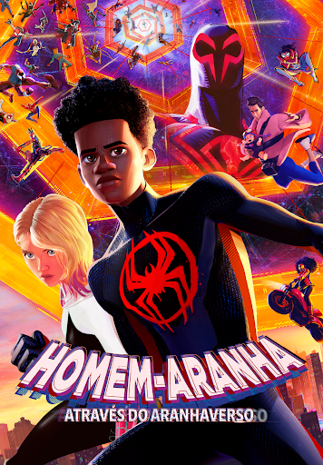
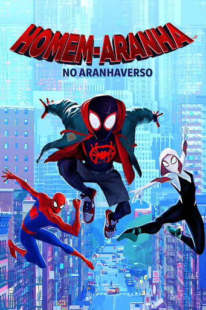
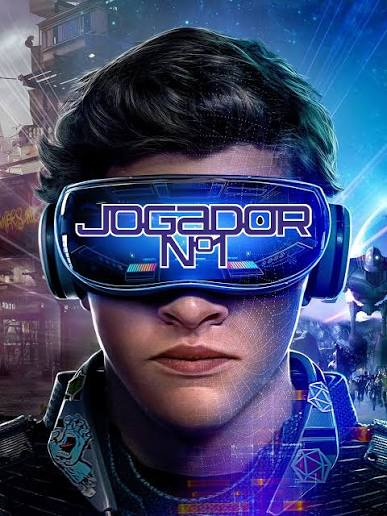
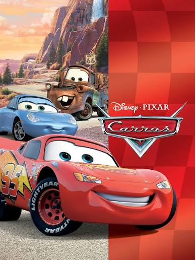

Homem Aranha através do aranha-verso: Em Homem-Aranha: Através do Aranhaverso, Miles Morales viaja pelo multiverso com Gwen Stacy. Ele encontra a Sociedade-Aranha, liderada por Miguel O'Hara. Miles entra em conflito com os outros heróis sobre como salvar o mundo e precisa lutar contra eles para proteger quem ama.

Homem Aranha no aranha-verso: Em Homem-Aranha no Aranhaverso, o jovem Miles Morales ganha poderes de aranha e precisa unir forças com heróis de outras dimensões como Gwen Stacy e Peter B. Parker para impedir que o Rei do Crime destrua o multiverso com um supercolisor e salvar sua realidade.

Jogador número 1: Em um futuro distópico no ano de 2045, a humanidade prefere a realidade virtual do jogo OASIS ao mundo real em ruínas. Quando o criador do jogo morre, ele deixa sua fortuna escondida em um enigma. O jovem Wade Watts entra na disputa e enfrenta rivais perigosos para vencer o desafio.

Truque de mestre 3º ato: Em Truque de Mestre: O 3º Ato, os Quatro Cavaleiros se unem a uma nova geração de ilusionistas para enfrentar Veronika Vanderberg, uma poderosa herdeira de diamantes corrupta. O grupo usa grandes ilusões e mágicas em escala global para expor os crimes da antagonista e tentar roubar a joia mais valiosa do mundo

Carros 1: O filme Carros da Pixar acompanha Relâmpago McQueen, um carro de corrida ambicioso que se perde na pacata cidade de Radiator Springs. Lá, ele faz amizade com outros veículos e aprende que a amizade e a humildade são mais importantes que a fama.